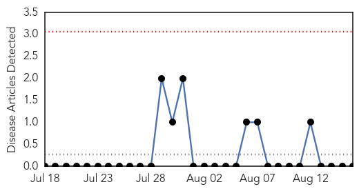
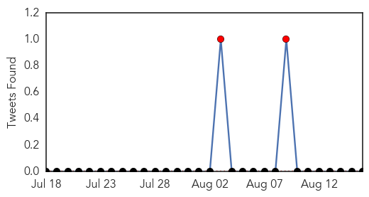
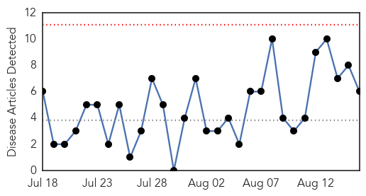
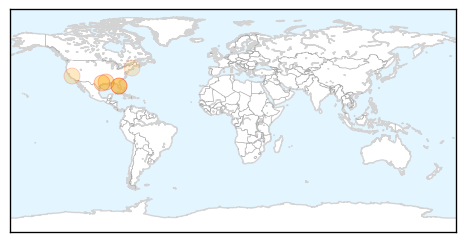

Hemmorhagic Fever
30-Day Web Trend
0 alerts, 0 warnings

30-Day Twitter Trend
3 alerts, 0 warnings

Article Locations

Article Confidences

Top Articles:
-
No articles found for Aug 16, 2014
Top Tweets:
-
No tweets found for Aug 16, 2014
West Nile Virus
30-Day Web Trend
0 alerts, 0 warnings

30-Day Twitter Trend
0 alerts, 0 warnings

Article Locations
Article Confidences
Top Articles:
- 0.998
- DHH confirms 13 new West Nile Virus cases this week; 42 total ca
- 0.985
- Aerial spraying for mosquitoes to begin in county next week
- 0.980
- 9 things you didn’t know about mosquito bites
- 0.940
- 9 Things You Didn't Know About Mosquito Bites
- 0.707
- 5 Infected With West Nile Virus In Santa Clara County « CBS San Francisco
- 0.568
- EEE found in New Hampshire, officials say to take precautions
Top Tweets:
-
No tweets found for Aug 16, 2014